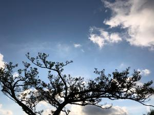
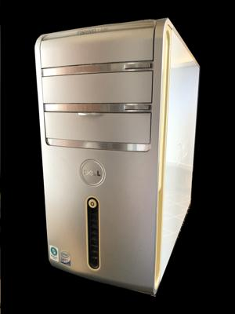
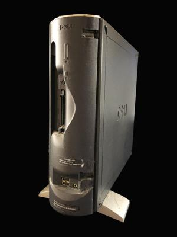
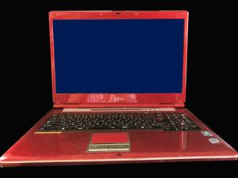

うるがいの話 ある日
最新: パソコン無料回収【うるがいの話 ある日】とは 一日だけのプログです
『うるがいの話』の最新一日だけのプログで、通信料が少なく経済的だ。カニの画像をクリックすると全ての日付が載る『うるがいの話』サイトを表示します
|
|
【うるがいの話】 うるがい(ｳﾙｶﾞｲ urugai)とは、『もずくがに』の名前でとても大きくなります。 |
|---|---|
|
|
【カミマヤーの話】 猫のことを方言でマヤーといいます。カミマヤー（kamimayaa）とは、神の猫のことです。 |
|
【たながぁの音楽】 たながぁ（ﾀﾅｶﾞｰ tanagaa）とは手長えびのことで、何種類かあり大きいのは車 エビぐらいになります。 |

|
【ぶながぁの話】 ぶながぁ(ﾌﾞﾅｶﾞｰ bunagaa)とは、赤い髪の毛、赤い身体、そして身長は１ｍ２０ｃｍ ぐらい、川の蟹を食べているの目撃された。場所は沖縄県国頭郡大宜味村のと ある村僕の隣近所に住んでいる爺さんから、聞いた話です。 |
|
|
【ギーマの話】 ギーマ(giima)とは、山原の里山に咲くスズランに似た、 花を付けます。実は食べられます、 気が付くと口の周りが紫になっています。 |
2022年07月25日 (月）パソコン無料回収
16:03
   
動かなくなったパソコン３つを廃棄すべく、那覇市のサイトで調べるとパソコ
ンの無料回収をすすめていた。さっそく、利用することに、ネットで申し込み
をエントリしていると、２台目以上は一台１，５００円だと！、なんだこれ？
電話で確認した、一回の申し込みでは１台目は無料なので、複数台数ある場合
は複数回申し込めば無料になるのですか、と答えはハイ。なんか、変だけど先
週の金曜日に一台目、そして今日２台目の無料回収を滞（とどこおり）なく行
えた。こうしている間に、２００３年に購入した、ミニコンポの電源が点かな
くなった。これも廃棄しなければ、いけなくなった。パソコン無料回収のサー
ビスで、オーディオ等は一台１，６５０円出せば引き取ってくれるのだが、那
覇市の粗大ゴミ（３百円）対象か、電話した。なんと、ミニコンポは燃やさな
いゴミの袋に収まれば、良いと言われた。ホー、では最後の３台目も、明日の
パソコン無料回収で行う事にした。
なお、廃棄した（する）パソコンとは以下の３台である。
１．デルのディスクトップ XP
購入2002年11月18日 稼働記録 2018年10月20日 廃棄 2022年07月22日
２．デルのディスクトップ Vista
購入2009年01月03日 稼働停止 2021年03月23日 廃棄 2022年07月25日
３．富士通のノートブック Vista（コドモが使用していた）
購入2008年 稼働停止 2020年04月27日 廃棄 2022年07月26日
１５時５１分 ビットコインの総資産 ￥８、６３６↓